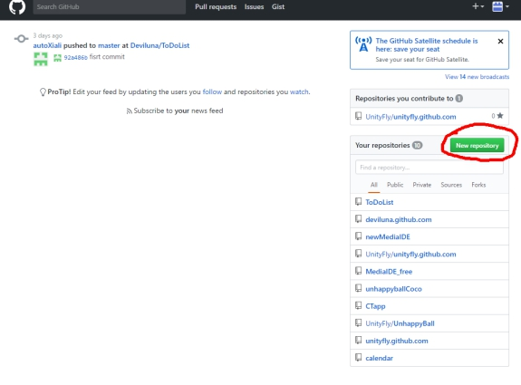

1.登录github创建项目。

这里就简单提一下思路。
创建出来的项目自然是空项目，把这个空项目clone到某个地方，之后把qt项目的文件（不是文件夹）复制进来，之后就是push的过程，项目就上传到仓库了。以后qt就从这个目录打开项目。
2.做一个简单的小程序
要求：在mainwindow.ui下，放置三个组件label,textEdit,pushButton，当点击pushButton时，将label里的文字变成textEdit内的文字。
目的：学习ui，TextEdit，label，pushButton的使用。